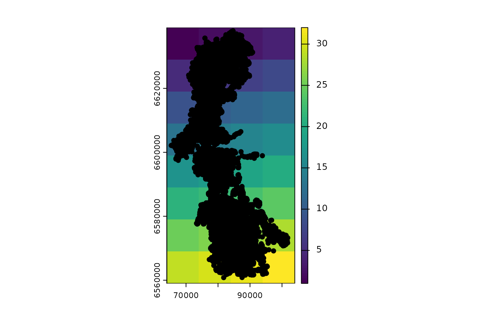

Explore hierarchical blocks after sampling or spatial stratification
Source:R/explore_blocks.R
explore_blocks.RdFunction to explore the number of cases and observations for the sampling units used as the base H0 hierarchical level used for model validation, such as population ID, study area, animal ID, or year, after spatial stratification. It also allows exploring the the spatially stratified levels H1 and H0, to be used for model fitting and tuning (train and test), respectively. The function can help understand how imbalanced are data across H0, H1, and H2 levels used for validation, training/fitting, and tuning/testing, as well as how many blocks exist there are for each type and their sizes.
Arguments
- blocks
[data.frame]
Adata.framereturned by the functionspat_strat(), which a list of blocks H0 used for validation and blocks H1 and H2 spatially stratified.
Value
A list with:
blockH0_n: the number of levels/blocks in the hierarchical level H0, to be used for validation;
blockH0_size_blocks: the number of (used) observations in each block of the hierarchical level H0, to be used for validation;
blockH1_n: the number of different blocks (spatial strata) in the hierarchical level H1, to be used for model fitting.
blockH1_size_blocks: the number of (used) observations in each block of the hierarchical level H1, to be used for model fitting;
blockH2_n: the number of different blocks (spatial strata) in the hierarchical level H2, to be used for model tuning.
blockH2_size_blocks: the number of (used) observations in each block of the hierarchical level H2, to be used for model tuning.
Examples
# read data
data("reindeer_ssf")
# spatial stratification
spst <- spat_strat(reindeer, coords = c("x", "y"), colH0 = "original_animal_id")

# explore blocks
explore_blocks(spst)
#> $blockH0_n
#> [1] 9
#>
#> $blockH0_size_blocks
#> 3358 3361 3362 3364 3372 3378 6331 6333 6335
#> 5835 5807 2651 5844 2651 2643 2674 2464 2633
#>
#> $blockH1_n
#> [1] 26
#>
#> $blockH1_size_blocks
#> 1 2 3 5 6 7 9 10 11 13 14 15 17 18 19 21
#> 17 3519 905 608 5831 947 240 1480 62 1415 1428 47 107 3092 163 2
#> 22 23 24 25 26 27 28 30 31 32
#> 1955 1829 10 72 2269 3394 486 673 2595 56
#>
#> $blockH2_n
#> [1] 78
#>
#> $blockH2_size_blocks
#> 3 4 5 10 11 12 13 14 18 19 20 21 22 26 27 28
#> 28 196 163 17 1361 1934 683 59 328 2009 1739 810 12 280 1361 722
#> 29 30 34 35 36 37 42 43 44 49 50 51 52 53 57 58
#> 121 4 78 569 276 62 162 528 107 12 485 542 158 13 188 730
#> 59 60 61 62 65 66 67 68 69 70 74 75 76 77 83 84
#> 549 179 25 9 13 89 983 429 94 13 5 859 821 56 344 313
#> 85 86 90 91 92 93 94 95 98 99 100 101 102 103 104 107
#> 124 13 2 385 913 1400 292 10 72 190 1349 1128 334 350 14 48
#> 108 109 110 111 112 115 116 117 118 119 124 125 126 127
#> 682 1420 512 62 60 17 438 1585 743 21 218 127 140 35
#>